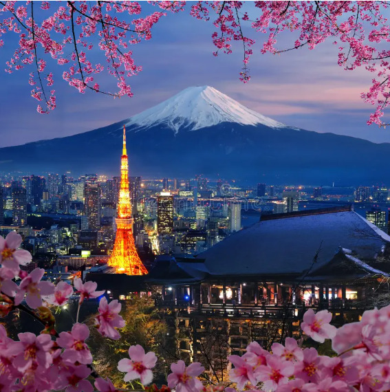
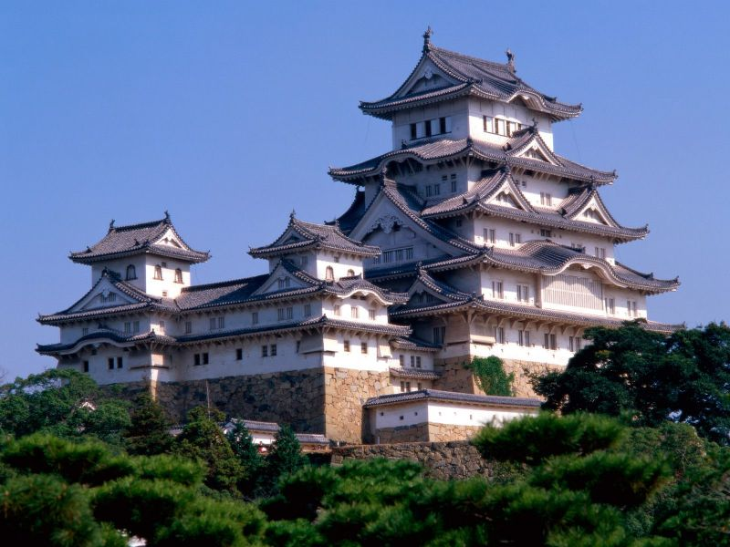
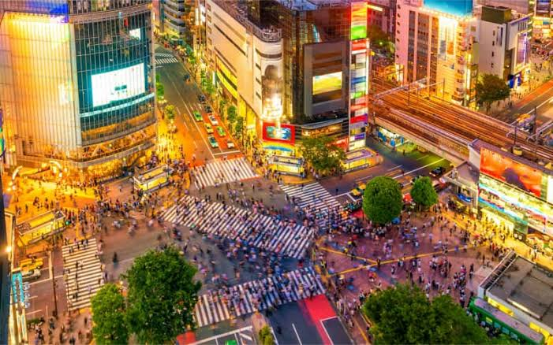
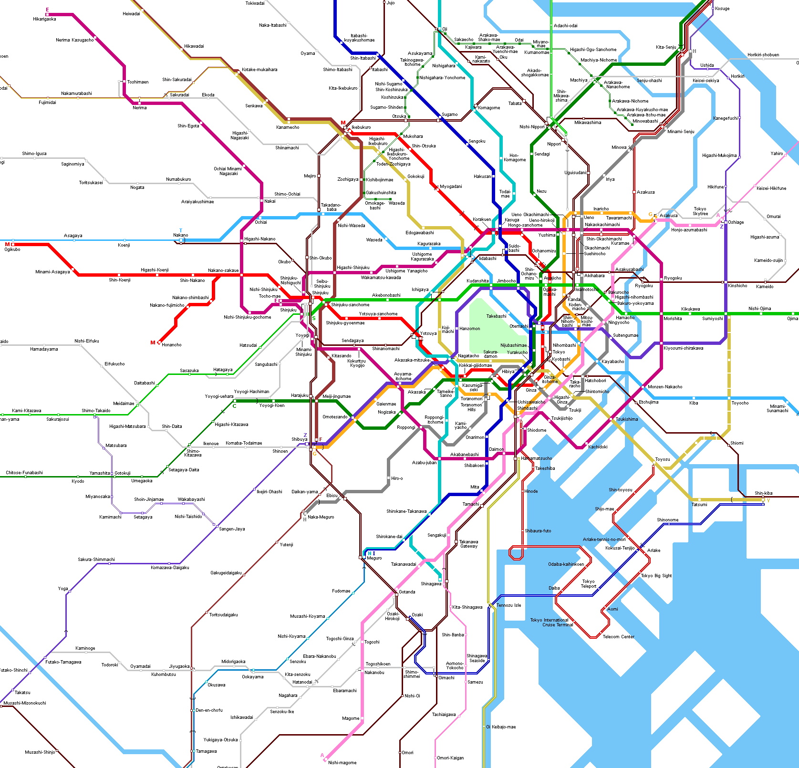

Csoportmunka keretében készült ez a weboldal. A weboldalon Tokiót, mint kedvenc városunkat fogjuk bemutatni. Bemutatunk négy látványoságot a városban, illetve az oldal legalján egy rövid kvíz is található lesz!
Tokió (hivatalosan Tokió Metropolisz), Japán egyik legpopulárisabb városa, közel 14 millió lakos él itt. Eredetileg az Edo városnevet viselte az 1600-as években a Tokugawa shógunátus alatt.

A Tokiói Rádiótorony az egyik legjellegzetesebb látványoság Japánban. Kivilágítva a zajos városi életben, a Fuji hegy előtt és a virágzó cseresznye fák között egy gyönyörű látképet kapunk. Az ember csak gyönyörködni tud a látványban egy nyugalmas, lassú séta alatt.
| Kezdet | Befelyezés | Magasság | Tömege |
|---|---|---|---|
| 1957. június | 1958. október 14 | 332,6 méter | 4000 tonna |
A Tokiói császári palota, a japán császár hivatalos rezidenciája, amely a főváros központjában van. Egy hatalmas park terül el az Edó-kastély helyén. Régen a sógunátus központ volt, ma már itt lakik a császári család. A Nijubashi-híd ami nem messze található a palotától, az egyik legnevezetesebb kettős híd a fotósok számára.
| Kezdet | Edo-kastély néven | hivatalosan császári palota | Modern palota |
|---|---|---|---|
| 15. század közepén építették | 1603 - 1867 | 1869 | 1968-tól napjainkig |


Ez a kereszteződés nem mindenki számára látvány. Viszont, mikor a piros gyalogos átkelő jelzőlámpái zöldre váltanak, egy hatalmas embertömeg zúdul az utcára és mintha elfoglalná az egész utat az autósok elől. Ez a shibuyai kereszteződés, amely egy nevezetes gyalogos átkelőhely a helyi lakosok számára. Régen 1000 még az is lehet, hogy 10.000 ember ment át ezen a kereszteződésen, viszont a mai technológia hatására, az emberek száma csökkent, akik át akarnak menni egyik oldalról a másikra.
A világ legpontosabb és leggyorsabb metróhálózata. Az egyik leghasználtabb és legfontosabb közlekedési hálózata, ami magába foglalja Tokió vasutait is a főváros körül. 9 vonalat üzemeltet, amelyekből 7 össze van kötve az elővárosi magánvasutak vonalaival. Kimerem jelenteni, hogy 3-szor nagyobb a Budapest metróvonalakhoz képest
| Átadás | A hálózat hossza | Vonalak száma | Állomások/megállók száma |
|---|---|---|---|
| 1927 | 304,1 km | 13 | 285 |
